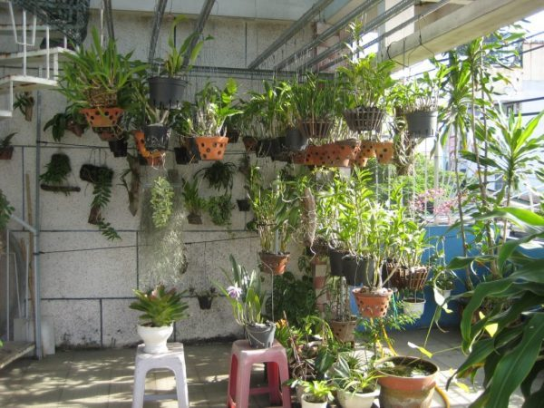
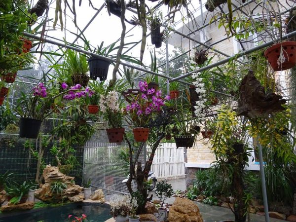
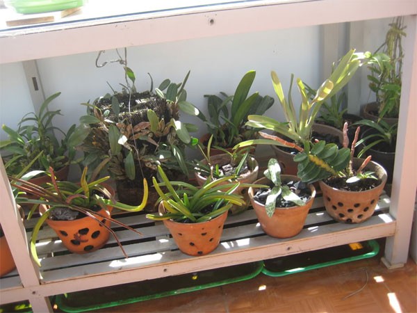
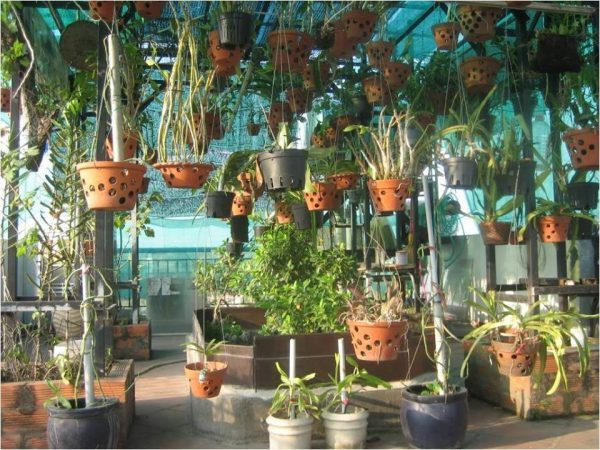
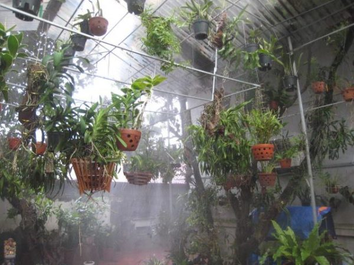

Long Trần, 13-5-2019
Trong thế giới các loài lan có vô vàn màu sắc và hương sắc khác nhau. Từ nổi bật rực rỡ cho đến thanh cao và mềm mại. Mỗi loại đều có những yêu cầu điều kiện sống và sinh trưởng khác nhau nhưng có chung nhiều điểm chỉ có ở các giống lan. Trong bài viết này chúng tôi xin chia sẻ đến bạn các loại hoa lan đẹp – Hướng dẫn trồng và chăm sóc hoa lan đơn giản
Lan là giống cây có nguồn gốc từ rừng sâu. Tùy vào điều kiện môi trường rừng khác nhau mà các loại lan có sự thích nghi khác nhau. Để trồng và chăm sóc các loại lan nói chung được khỏe mạnh và ra hoa nở to đẹp bạn cần đảm bảo được các điều kiện thuận lợi cho lan phát triển. Với các yếu tố quan trọng nhất được nêu như ánh sáng, tưới nước, giá thể trồng, độ ẩm và chế độ bón phần cho cây.
Chú ý đến việc thiết kế vườn trồng lan
Với việc trồng và chăm sóc lan dù nghiệp dư hay chuyên nghiệp hoặc để kinh doanh thì việc chọn và thiết kế vườn trồng là khâu đầu tiên cũng là quan trọng nhất.
Với người chơi lan bình thường: bạn có thể chọn những nơi cao ráo thoáng mát như sân thượng, mái hiên hoặc trên lan can đều trồng được loại lan này. Một chú ý bạn nên cân nhắc là với những ngôi nhà có vị trí này thường sẽ nóng và khô hơn do ảnh hưởng của kết cấu nhà bê tông. Nếu có thể bạn nên đặt thêm những chậu cây khác cao to để che bớt nắng và cung cấp độ ẩm trong không khí cho lan.

Với những hộ kinh doanh lan thì cần thiết kế những khu vườn trồng lan chắc chắn và bền chống được cả gió bão. Bên trên khu vườn cần thiết kế thêm giàn che nắng bằng các loại lưới đen hai lớp để giúp cản bớt ánh nắng cho lan. Giàn đặt chậu làm bằng sắt, giàn treo làm bằng tầm vông hay sắt ống nước. Xung quanh vườn cần dựng hàng rào chắn chắc chắn hay rào bằng lưới B40. Thiết kế hàng trồng theo hướng Bắc Nam để vuông góc với dường đi của ánh nắng. Các chậu lan cần chọn cùng cỡ kích thước, cùng giống, cùng độ tuổi, bố trí theo từng khu vực để dễ chăm sóc. Nước tưới phải sạch, có rãnh nước dưới dàn lan để tạo khí hậu mát cho vườn lan.
Chọn lựa giống lan phù hợp
Nếu như mới trồng bạn nên trồng những loại lan dễ sống, phát triển mạnh và cho hoa nở lien tục. Một số loại lan dễ trồng bạn có thể cân nhắc chọn trồng đó chính là Lan vũ nữ, Lan Hồ Điệp, Lan Dendrobium vv. Những loại lan này dễ chăm sóc và ra hoa khá đẹp.

Cây lan giống được trồng hiện nay thường được chọn bằng cách nuôi cấy mô hoặc tách mầm từ cây mẹ. Nhìn chung môi trường nuôi cấy mô phong lan thường ở nhiệt độ 22-27 độ C. Với cường độ ánh sáng phù hợp với từng loại và độ pH 5-7
Trước khi trồng hầu hết các giống lan nói chung đều cần phải xử lý qua bằng các dung dịch kháng khuẩn nấm bệnh và kích thích mọc rễ. Có thể khử trùng mô lan bằng Starner 20 WP cấy bằng Clorox hoặc Hipocloritcalci, bổ sung các chất điều hòa sinh trưởng.
Thường thì việc trồng và nhân giống lan bằng cách tách mầm có thể được tách từ các chậu lan lớn. Mỗi phần đế có từ 2-3 nhánh, Khi tách bạn sử dụng dao sắc khử trùng bằng cồn và cắt mầm. Sau đó bôi vôi vào vết cắt cho nhanh liền sẹo.
Chọn lựa giá thể trồng cây
Gía thể trồng lan hiện nay phổ biến nhất là từ gỗ lũa và chậu đát nung. Gía thể bên trong chậu có thể là than gỗ, xơ dừa, vỏ lạc hoặc dớn. vv. Khi chuẩn bị bạn cần đặt than gỗ chặt khúc với kích thước 1x2x3cm và phải ngâm rửa sạch rồi phơi khô. Xơ dừa xé nhỏ cho tơi bạn nên ngâm khoảng 1 tuần cho bớt lượng tannin và chất mặn đi. Vỏ dừa bạn nhớ chặt khúc nhỏ như than rồi ngâm qua nước vôi 5% để diệt sạch nấm bệnh.
Ngoài ra cần chú ý là chọn lựa chậu trồng phù hợp với loại cây và nên chọn loại chậu đất nung có nhiều lỗ thoáng bên cạnh.
Kĩ thuật trồng lan nói chung
Với mỗi loại lan khác nhau sẽ có những cách thức trồng khác nhau tuy nhiên sẽ có nhiều điểm chung. Nếu bạn sử dụng cây giống lan là loại cây cấy mô thì ngay sau khi mô lan đạt cao 4cm bạn nên chuyển ra ngoài và rửa sạch và để kê trên chậu nước mát cho cây con.

Khi bạn trồng bạn tiến hành lấy xơ dừa bó xung quanh lan cấy mô và dùng dây nịt cuốn lại đặt lên trên đầu giàn. Sau khoảng 6-7 tháng trồng thì bạn chuyển cây sang chậu nhỏ. Lúc này cây đã có chiều cao 30cm và bạn tiếp tục chuyển sang chậu lớn để trồng. Sau mỗi lần chuyển chậu thì định kì 1 tuần bón phân cho cây một lần. Nếu trồng lan để chơi, lan lâu ngày ra hoa ít cần dỡ lan ra khỏi chậu, cắt bớt các rễ già và quá dài, chuyển sang chậu mới, thay giá thể mới, lan sẽ sinh trưởng tốt và ra hoa trở lại.
Cách chăm sóc lan ra hoa nở đẹp
Các loại lan nói chung nhiều loài dễ trồng dễ chăm sóc tuy nhiên cũng không hiếm loại cây khó trồng và tính khí khá đỏng đảnh. Đễ chăm sóc nếu chúng ta đảm bảo được các điều kiện thuận lợi cho lan phát triển. Các yếu tố quan trọng nhất đối với lan là ánh sáng, nước tưới, độ ẩm, chậu hay giá thể và dinh dưỡng.
Chế độ chiếu sáng
Có thể nói cường độ chiếu sáng có ảnh hưởng rất lớn đến quá trình phát triển và sinh sản của lan. Nếu thiếu nắng cây lan của bạn tuy vươn cao nhưng ốm yếu và nhỏ không mập và lá thường có màu xanh tối nên dễ bị sâu bệnh hại tấn công.

Chế độ bón phân cho cây
Trong việc trồng lan thì việc bón phân cho lan là điều cần thiết đôi khi là bắt buộc đối với một số loại lan khó tính ưa dinh dưỡng cao. Một khi cây lan đủ dinh dưỡng lan sẽ phát triển xanh tươi, lá và giả hành sẽ to mập đồng thời hoa nở nhiều đều và đẹp.
Theo nghiên cứu về dinh dưỡng của các loại lan nhìn chung lan cần cung cấp khoảng 13 loại chất dinh dưỡng khoáng và thuộc các nhóm, đa, trung và vi lượng. Dinh dưỡng đa lượng gồm Đạm (N), Lân (P) và Kali (K). Dinh dưỡng trung lượng gồm Lưu huỳnh (S), Magiê (Mg) và Canxi (Ca). Dinh dưỡng vi lượng gồm Sắt (Fe), Kẽm (Zn), Đồng (Cu), Mangan (Mn), Bo (B), Molypđen (Mo) và Clo (Cl).
Nếu trong quá trình trồng lan bị thiếu hoặc mất cân đối thì lan sẽ không thể nào phát triển tốt được. Lan rất cần phân bón nhưng không chịu được nồng độ dinh dưỡng cao, Hiện nay việc bón phân qua lá là việc làm hiệu quả và tốt nhất cho đa số các loại lan.
Nguyên tắc chung khi bón phân cho lan
Nguyên tắc chung là lan trong thời kỳ sinh trưởng thân lá mạnh cần đạm cao, lân và kali thấp, trước khi ra hoa cần lân và kali cao, đạm thấp trong khi lan nở hoa cần kali cao, lân và đạm thấp hơn.
Chế độ tưới nước cho lan
Lan có nguồn gốc trong rừng sâu nơi có nhiệt độ mát mẻ và độ ẩm cao nên việc tưới nước cho lan là điều cần thiết. Lan thiếu nước sẽ khô héo và giả hành sẽ teo lại . Nếu thừa nước thì cây sẽ bị thối đọt nhất là với những loại lan mọc sít nhau thành từng bụi một.

Yêu cầu nguồn nước tưới cho lan không bị nhiễm phèn, mặn và những tạp chất. Độ pHtốt nhất cho lan khoảng 5-6. Khi tưới nên tưới vào sáng sớm hay chiều mát, tránh tưới buổi trưa khi trời đang nắng nóng. Sau những trận mưa bất thường, nhất là mưa đầu mùa cần tưới lại ngay để rửa bớt các chất cặn đọng lại trên thân lá.
Phòng trừ sâu bệnh hại cho lan
Đa số các loại lan khá ưa điều kiện thoáng mát và sạch sẽ. Lan cũng dễ bị nhiễm sâu bệnh và nhất là trong điều kiện chăm sóc kém và điều kiện môi trường không thuận lợi.
Tùy thuộc vào từng loại sâu bệnh hại lan mà có biện pháp xử lý khác nhau. Những loại thuốc phun cho lan đều có liều lượng và nông độ phun được ghi trên nhãn mác bao bì sản phẩm.
Trên đây là những kiến thức về các loại hoa lan đẹp – hướng dẫn trồng và chăm sóc hoa lan đơn giản nhất cho bạn tham khảo. Hy vọng những kiến thức trên sẽ giúp cho bạn sở hữu được những chậu lan to đẹp và hoa bền lâu.